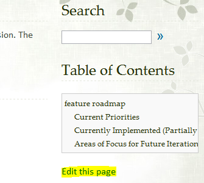

The Orchard documentation is built in Markdown. We use a few simple conventions to ensure a homogeneous style throughout the full set of documents.
File Name And Title
The document should not specify its own title as part of the document itself, but its file name should be the document title, with spaces replaced by dashes (-). The title will be added by the site dynamically, from the file name.
Structure
Topics should begin with a brief summary explaining what audience it targets and their key takeaways. This summary will be displayed in search results, so it should make sense by itself. It should consist of one paragraph of text, without a leading title.
If the topic is not complete enough to fulfill its goals, the top of the document should specify > Draft topic on the first line.
After the summary, the actual contents of the document should all be under section headers,
and the top section headers should be in header 1 style: # This Is A Top Header.
Headers should use capital letters to begin each word (see capitalization).
Subsections should be one level deeper than their parent section.
Do use explicitly named anchors when building links to a specific section of the document. Anchors are automatically created for all headers from their title by removing spaces. Anchors can be linked to using the following syntax:
[How To Build Awesome Documentation][link1]
[link1]: #HowToBuildAwesomeDocumentation
If the anchor is in another document, use the file name and the anchor name like this:
[Follow this link to learn how to build awesome documentation][link1]
[link1]: name-of-the-linked-document#HowToBuildAwesomeDocumentation
Please note that anchor names are case-sensitive.
The text within a section should be structured in short paragraphs. Don't forget to include an empty line in wiki markup between paragraphs.
Markup and Styles
Topics should use standard Markdown and should avoid inline HTML, including styles.
Bolding And Italics
Do not use header styles for emphasis.
Use *surrounding asterisks* for emphasis, which will be rendered as italics.
Use **double asterisks** for strong emphasis, which will be rendered as bold.
Use
> angle bracket paragraphsto highlight a whole paragraph.
Code
Inline code should be surrounded by `ticks`, and multi-line code samples should be in paragraphs indented with 4 spaces.
This is a code block
Try to break code lines so that the code blocks do not have horizontal scroll bars.
Escaping Markdown
If you need to use sequences of characters in your text that would normally be parsed as wiki markup, such as `, * or _ but that you want to appear as they are without being parsed, add a backlash (\) in front or surround those sequences with code delimiters (`). You can look at the source of this document (click the edit link in the sidebar) for many examples of this.
The list of characters that can be escaped can be found here.
Images
Images should not be wider than 675 pixels if they are going to be embedded into a topic. Wider images are acceptable as targets of a link from a page. The link to such a wide image should itself be a 675 pixel-wide thumbnail of the image. When including a large image, do it as a 675 pixels wide image linking to the high-resolution version. Images narrower than 675 pixels should be included with their natural width and should not be enlarged.
Images should be checked into github, in a subdirectory of the Attachments directory that has the same name as the topic's markdown file. If the image exists in small and large versions, the small one should be named the same as the full resolution, but prefixed with "s_".
The typical markup to include an image is as follows:

If the image is a link to a higher resolution, the link and image syntaxes must be combined:
[][img1]
[img1]: ../Attachments/Topic/NameOfImage.png
Acceptable image formats are PNG, JPG and GIF. Images should be reasonably compressed. Avoid JPG for screenshots, and reserve it for photos.
Links
References to other topics on this wiki can be made using:
[Text for the link](Topic-Name)
Or:
[Text for the link][ref1]
[ref1]: Topic-Name
Links to external content can be added using:
[Text for the link](http://somesite/somepage)
Or:
[Text for the link][ref1]
[ref1]: http://somesite/somepage
If you are using the reference syntax, the references may be grouped at the end of the document, separating the link itself from the reference definition.
Do use links to specific sections of a document where relevant (see the structure section).
Capitalization
In topic titles and in section headings, use title-style capitalization (as opposed to sentence style). When referring to UI elements, follow the capitalization style used in the UI elements themselves.
Tables
Tables should be built to fit into the standard width of pages on this site. The markup to create a table is a common extension for Markdown:
Header A | Header B | Header C
-------- | -------- | --------
Cell A.1 | Cell B.1 | Cell C.1
Cell A.2 | Cell B.2 | Cell C.2
Cell A.3 | Cell B.3 | Cell C.3
This markup will create the following table:
| Header A | Header B | Header C |
|---|---|---|
| Cell A.1 | Cell B.1 | Cell C.1 |
| Cell A.2 | Cell B.2 | Cell C.2 |
| Cell A.3 | Cell B.3 | Cell C.3 |
For details of table syntax see Markdown Extra Tables Reference.
Contributing Documentation
The Orchard documentation is managed as Markdown files in a Git repository hosted on Github.
Making Edits On Existing Topics
In the right sidebar of each topic, you will find a link to the document on Github.

Contributing Larger Changes And Topics
We recommend the use of GitHub for Windows to clone the documentation locally. This will give you a local copy of the documentation site, that you can run from WebMatrix or Visual Studio.